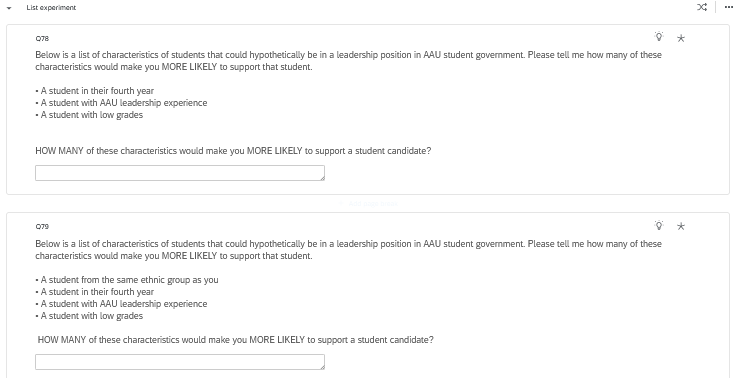
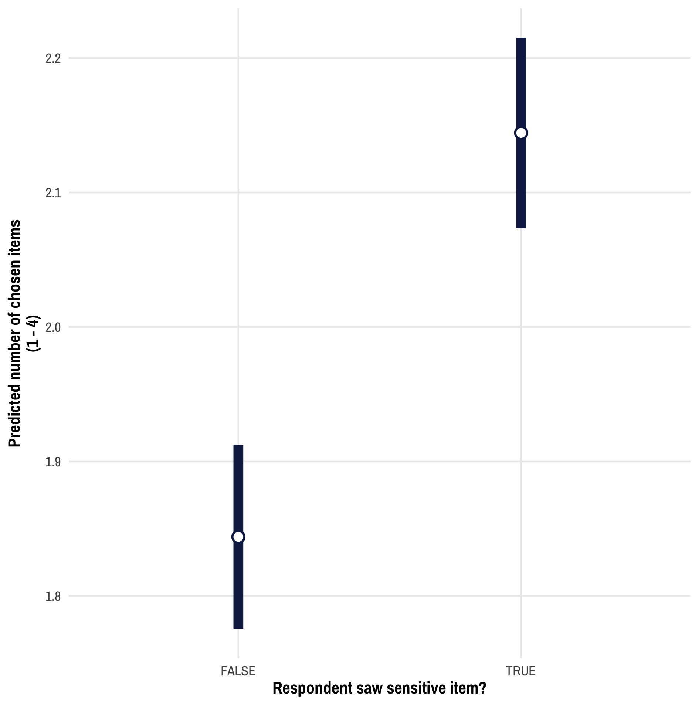
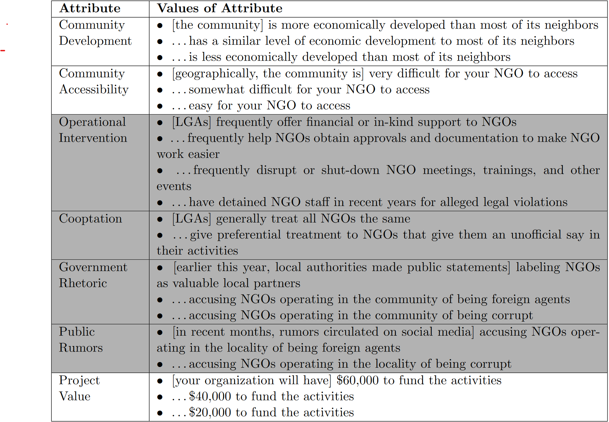
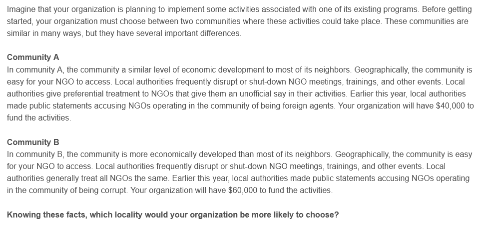

Linear Regression
Plus Survey Experiments and Autocratization
Logistics
Assignments
- Today
- DSS Ch 4
- Create a git repo for this class (psci3200_yourname)
- Thursday
- DSS Ch5 (will circulate tomorrow)
Agenda
- Survey Experiments
- Overview
- Albertus & Grossman
- Hollerbauer et al.
- Linear Regression
Survey Experiments
What are survey experiments?
Two general uses
- Measuring sensitive attitudes
- Providing anonymity
- Identifying causal effect
- Manipulating images and text
List Experiments
- What can list experiments tell us?
- prevalence of the sensitive attitude in the survey population
- What can they not tell us
- attitude of any individual respondent
- When might this be useful?
- Assessing prevalence of something
- Quantifying measurement bias/misreporting
List Experiments


Randomized Response
- What is it?
- Induce some \(p > 0\) that you say “Yes” even if you disagree
- Pitfalls
- Complexity, confusion
- Lack of anonymity
- Variants
- Repeated randomized response
- Crosswise
Priming
- What is it?
- Measures implicit attitudes by stimulating unconscious association
- Pitfalls
- Hard to know if the prime worked (false negative, confounding, etc.)
Confounding: Any experimental intervention A that is meant to trigger mental construct M could also trigger mental construct C. If C is not varied in the experimental design, researchers cannot determine whether M, C, or a combination of M and C affect outcomes of interest.
Vignettes and Factorials
- What is it?
- Presents a scenario while varying key components
- Pitfalls
- Unrealistic combinations
- Limited power
Conjoints
- What is it?
- Presents pair of profiles while varying attributes
- Asks respondents to choose between profiles
- Pitfalls
- Requires careful attention
- Can be highly synthetic
Credibility in Survey Experiments
- Multiple Hypothesis Testing
- Pre-registration
- Behavioral measures
Albertus & Grossman
Background
Decline in the quantity and quality of democracies
- Executive power grabs rather than military coups
Common tools used
- Weaken judiciary and media independence
- Purge bureaucracy and neutralize legislature
- Reduce political competition through legal changes
Research Questions
- Why do many voters support or ignore antidemocratic actions?
- Why are transgressions rarely punished?
- How is public opinion affected by means and justification?
Why don’t citizens resist?
Three potential answers:
- Citizens don’t realize executive’s intentions
- Should identify and oppose
- Citizens are conditional democrats (trade-off w/ideology)
- Should identify and support conditional on ideology
- Citizens may have differing conceptions of democracy
- Don’t identify actions as antidemocratic
What’s the Research Design?
Vignette Experiment
- Manipulation
- Antidemocratic behavior
- Partisan alignment
- Means and justifications
- Outcomes
- Perceived as antidemocratic
- Support for action
- Support for punishment
Findings
- Positive:
- Citizens identify antidemocratic actions
- Respondents identify actions and oppose them
- Means and justifications do not increase support
- Negative
- Significant minority supports antidemocratic actions
- Partisan power increases support (is this weird?)
- Little support for legal punishment
Editorial Notes
Pushes back against polarization based explanations, which predict that people support antidemocratic behaviors because they view the other side as so dangerous
Policy Implications?
- Legal punishment might cause backlash
- Encoding norms into law might not matter
- Reducing polarization might not help
Hollerbauer et al. (working paper)
Background
Governments seek to control NGO activities
- NGOs control significant development resources
- They engage in activity that benefits and threatens incumbents
- Governments respond with both accommodation and coercion
Research Questions
How do government interventions affect NGO behavior?
- Where NGOs work
- How they operate
- Who they engage with
What’s the Research Design?
Conjoint Experiment
- Manipulation: subnational variation in…
- Positive or negative government intervention
- Cooptation vs equal treatment of NGOs
- Positive vs negative rhetoric about NGOs
- Outcomes: community where NGO would…
- Prefer to work
- Involve the public
- Partner with other actors (NGOs, govt, community leaders)
- Organize public action
Attribute Table

Question Appearance

Findings
- Negative
- NGOs avoid repression and cooptation
- NGOs reduce partnership and public engagement
- Positive
- Repression increases public action
Policy Implications?
- Governments can shape where NGOs work
- Networks aren’t the answer
- Facilitating contentious action may increase the cost of repression
Linear Regression
Predicting Outcomes
Why make predictions?
- Data coverage
- Strategic planning
How does prediction work?
- Mapping relationships between past and future or between measured and unmeasured units
- Agnostic out causality (what are the implications?)
Linear Regression Model
\[ Y_i = \alpha + \beta X_i + \epsilon_i \]
- What is \(\alpha\)?
- What is \(\beta\)?
- What is \(X_i\)?
- What is \(\epsilon_i\)?
Linear Regression Model
Estimating model parameters
\[ \hat{Y_i} = \hat{\alpha} + \hat{\beta} X_i \] Residuals
\[ \hat{\epsilon_i} = Y_i - \hat{Y_i} \]
Linear Regression Model
Coefficient \[ \hat{\beta} = \Delta{\hat{Y}} / \Delta{X} \]
Minimizing Residuals
\[ SSR = \sum_{i}^{N} \hat{\epsilon}_i^2 \]